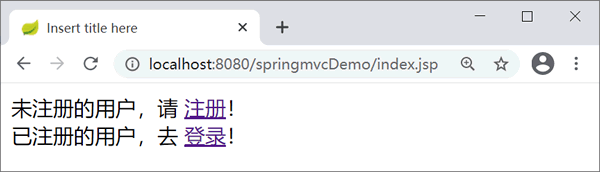
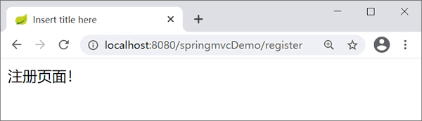
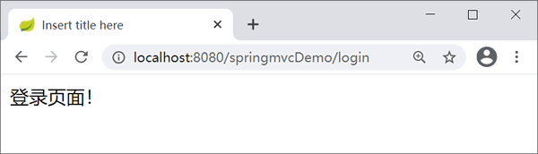
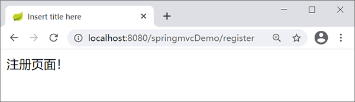
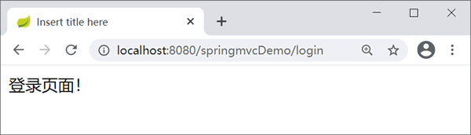

首页 > 编程笔记
第一个Spring MVC程序
本节通过一个简单的 Web 应用 springmvcDemo 来演示如何创建 Spring MVC 程序。
搭建步骤如下：
也可以将 Spring MVC 的配置文件存放在应用程序目录中的任何地方，但需要使用 servlet 的 init-param 元素加载配置文件，通过 contextConfigLocation 参数来指定 Spring MVC 配置文件的位置，示例代码如下。
上述代码配置了一个名为“springmvc”的 Servlet。该 Servlet 是 DispatcherServlet 类型，它就是 Spring MVC 的入口，并通过
在上图所示的页面中，当用户单击“注册”超链接时，根据 springmvc-servlet.xml 文件中的映射将请求转发给 RegisterController 控制器处理，处理后跳转到 /WEB-INF/jsp 下的 register.jsp 视图。同理，当单击“登录”超链接时，控制器处理后转到 /WEB-INF/jsp下的 login.jsp 视图。
搭建步骤如下：
- 创建 Web 应用并引入 JAR 包，本教程 Spring 使用版本为 5.2.3
- Spring MVC 配置：在 web.xml 中配置 Servlet，创建 Spring MVC 的配置文件
- 创建 Controller（处理请求的控制器）
- 创建 View（本教程使用 JSP 作为视图）
- 部署运行
1. 创建Web应用并引入JAR包
创建 Web 应用 springmvcDemo，在 springmvcDemo 的 lib 目录中添加 Spring MVC 所依赖的 JAR 包。Maven 项目在 pom.xml 文件中添加以下内容：Spring MVC 依赖 JAR 文件包括 Spring 的核心 JAR 包和 commons-logging 的 JAR 包。
<!--测试-->
<dependency>
<groupId>junit</groupId>
<artifactId>junit</artifactId>
<version>4.11</version>
<scope>test</scope>
</dependency>
<!--日志-->
<dependency>
<groupId>org.slf4j</groupId>
<artifactId>slf4j-log4j12</artifactId>
<version>1.7.21</version>
</dependency>
<!--J2EE-->
<dependency>
<groupId>javax.servlet</groupId>
<artifactId>javax.servlet-api</artifactId>
<version>3.1.0</version>
</dependency>
<dependency>
<groupId>javax.servlet.jsp</groupId>
<artifactId>jsp-api</artifactId>
<version>2.2</version>
</dependency>
<dependency>
<groupId>javax.servlet</groupId>
<artifactId>jstl</artifactId>
<version>1.2</version>
</dependency>
<!--mysql驱动包-->
<dependency>
<groupId>mysql</groupId>
<artifactId>mysql-connector-java</artifactId>
<version>5.1.35</version>
</dependency>
<!--springframework-->
<dependency>
<groupId>org.springframework</groupId>
<artifactId>spring-web</artifactId>
<version>5.2.3.RELEASE</version>
</dependency>
<dependency>
<groupId>org.springframework</groupId>
<artifactId>spring-webmvc</artifactId>
<version>5.2.3.RELEASE</version>
</dependency>
<dependency>
<groupId>org.springframework</groupId>
<artifactId>spring-context</artifactId>
<version>5.2.3.RELEASE</version>
</dependency>
<dependency>
<groupId>org.springframework</groupId>
<artifactId>spring-test</artifactId>
<version>5.2.3.RELEASE</version>
</dependency>
<dependency>
<groupId>org.springframework</groupId>
<artifactId>spring-jdbc</artifactId>
<version>5.2.3.RELEASE</version>
</dependency>
<dependency>
<groupId>com.github.stefanbirkner</groupId>
<artifactId>system-rules</artifactId>
<version>1.16.1</version>
<scope>test</scope>
</dependency>
<dependency>
<groupId>org.aspectj</groupId>
<artifactId>aspectjweaver</artifactId>
<version>1.8.9</version>
</dependency>
<!--其他需要的包-->
<dependency>
<groupId>org.apache.commons</groupId>
<artifactId>commons-lang3</artifactId>
<version>3.4</version>
</dependency>
<dependency>
<groupId>commons-fileupload</groupId>
<artifactId>commons-fileupload</artifactId>
<version>1.3.1</version>
</dependency>
2. Spring MVC配置
Spring MVC 是基于 Servlet 的，DispatcherServlet 是整个 Spring MVC 框架的核心，主要负责截获请求并将其分派给相应的处理器处理。所以配置 Spring MVC，首先要定义 DispatcherServlet。跟所有 Servlet 一样，用户必须在 web.xml 中进行配置。1）定义DispatcherServlet
在开发 Spring MVC 应用时需要在 web.xml 中部署 DispatcherServlet，代码如下：
<?xml version="1.0" encoding="UTF-8"?>
<web-app xmlns:xsi="http://www.w3.org/2001/XMLSchema-instance"
xmlns="http://java.sun.com/xml/ns/javaee" xmlns:web="http://java.sun.com/xml/ns/javaee/web-app_2_5.xsd"
xsi:schemaLocation="http://java.sun.com/xml/ns/javaee http://java.sun.com/xml/ns/javaee/web-app_3_0.xsd"
version="3.0">
<display-name>springMVC</display-name>
<!-- 部署 DispatcherServlet -->
<servlet>
<servlet-name>springmvc</servlet-name>
<servlet-class>org.springframework.web.servlet.DispatcherServlet</servlet-class>
<!-- 表示容器再启动时立即加载servlet -->
<load-on-startup>1</load-on-startup>
</servlet>
<servlet-mapping>
<servlet-name>springmvc</servlet-name>
<!-- 处理所有URL -->
<url-pattern>/</url-pattern>
</servlet-mapping>
</web-app>
Spring MVC 初始化时将在应用程序的 WEB-INF 目录下查找配置文件，该配置文件的命名规则是“servletName-servlet.xml”，例如 springmvc-servlet.xml。也可以将 Spring MVC 的配置文件存放在应用程序目录中的任何地方，但需要使用 servlet 的 init-param 元素加载配置文件，通过 contextConfigLocation 参数来指定 Spring MVC 配置文件的位置，示例代码如下。
<!-- 部署 DispatcherServlet -->
<servlet>
<servlet-name>springmvc</servlet-name>
<servlet-class>org.springframework.web.servlet.DispatcherServlet </servlet-class>
<init-param>
<param-name>contextConfigLocation</param-name>
<param-value>classpath:springmvc-servlet.xml</param-value>
</init-param>
<!-- 表示容器再启动时立即加载servlet -->
<load-on-startup>1</load-on-startup>
</servlet>
<servlet-mapping>
<servlet-name>springmvc</servlet-name>
<url-pattern>/</url-pattern>
</servlet-mapping>
此处使用 Spring 资源路径的方式进行指定，即 classpath:springmvc-servlet.xml。上述代码配置了一个名为“springmvc”的 Servlet。该 Servlet 是 DispatcherServlet 类型，它就是 Spring MVC 的入口，并通过
<load-on-startup>1</load-on-startup> 配置标记容器在启动时就加载此 DispatcherServlet，即自动启动。然后通过 servlet-mapping 映射到“/”，即 DispatcherServlet 需要截获并处理该项目的所有 URL 请求。2）创建Spring MVC配置文件
在 WEB-INF 目录下创建 springmvc-servlet.xml 文件，如下所示。
<?xml version="1.0" encoding="UTF-8"?>
<beans xmlns="http://www.springframework.org/schema/beans"
xmlns:xsi="http://www.w3.org/2001/XMLSchema-instance"
xsi:schemaLocation="
http://www.springframework.org/schema/beans
http://www.springframework.org/schema/beans/spring-beans.xsd">
<!-- LoginController控制器类，映射到"/login" -->
<bean name="/login"
class="net.biancheng.controller.LoginController"/>
<!-- LoginController控制器类，映射到"/register" -->
<bean name="/register"
class="net.biancheng.controller.RegisterController"/>
</beans>
3. 创建Controller
在 src 目录下创建 net.biancheng.controller 包，并在该包中创建 RegisterController 和 LoginController 两个传统风格的控制器类（实现 Controller 接口），分别处理首页中“注册”和“登录”超链接的请求。RegisterController 的具体代码如下。Controller 是控制器接口，接口中只有一个方法 handleRequest，用于处理请求和返回 ModelAndView。
package controller;
import javax.servlet.http.HttpServletRequest;
import javax.servlet.http.HttpServletResponse;
import org.springframework.web.servlet.ModelAndView;
import org.springframework.web.servlet.mvc.Controller;
public class LoginController implements Controller {
public ModelAndView handleRequest(HttpServletRequest arg0,
HttpServletResponse arg1) throws Exception {
return new ModelAndView("/WEB-INF/jsp/register.jsp");
}
}
LoginController 的具体代码如下。
package controller;
import javax.servlet.http.HttpServletRequest;
import javax.servlet.http.HttpServletResponse;
import org.springframework.web.servlet.ModelAndView;
import org.springframework.web.servlet.mvc.Controller;
public class RegisterController implements Controller {
public ModelAndView handleRequest(HttpServletRequest arg0,
HttpServletResponse arg1) throws Exception {
return new ModelAndView("/WEB-INF/jsp/login.jsp");
}
}
4. 创建View
index.jsp 代码如下。
<%@ page language="java" contentType="text/html; charset=UTF-8"
pageEncoding="UTF-8"%>
<!DOCTYPE html PUBLIC "-//W3C//DTD HTML 4.01 Transitional//EN" "http://www.w3.org/TR/html4/loose.dtd">
<html>
<head>
<meta http-equiv="Content-Type" content="text/html; charset=UTF-8">
<title>Insert title here</title>
</head>
<body>
未注册的用户，请
<a href="${pageContext.request.contextPath }/register"> 注册</a>！
<br /> 已注册的用户，去
<a href="${pageContext.request.contextPath }/login"> 登录</a>！
</body>
</html>
在 WEB-INF 下创建 jsp 文件夹，将 login.jsp 和 register.jsp 放到 jsp 文件夹下。login.jsp 代码如下。
<%@ page language="java" contentType="text/html; charset=UTF-8"
pageEncoding="UTF-8"%>
<!DOCTYPE html PUBLIC "-//W3C//DTD HTML 4.01 Transitional//EN" "http://www.w3.org/TR/html4/loose.dtd">
<html>
<head>
<meta http-equiv="Content-Type" content="text/html; charset=UTF-8">
<title>Insert title here</title>
</head>
<body>
登录页面！
</body>
</html>
register.jsp 代码如下。
<%@ page language="java" contentType="text/html; charset=UTF-8"
pageEncoding="UTF-8" %>
<!DOCTYPE html PUBLIC "-//W3C//DTD HTML 4.01 Transitional//EN" "http://www.w3.org/TR/html4/loose.dtd">
<html>
<head>
<meta http-equiv="Content-Type" content="text/html; charset=UTF-8">
<title>Insert title here</title>
<body>
注册页面！
</body>
</html>
</head>
5. 部署运行
将 springmvcDemo 项目部署到 Tomcat 服务器，首先访问 index.jsp 页面，如下图所示。

index.jsp页面

register.jsp页面

login.jsp页面
index.jsp页面

register.jsp页面

login.jsp页面
在上图所示的页面中，当用户单击“注册”超链接时，根据 springmvc-servlet.xml 文件中的映射将请求转发给 RegisterController 控制器处理，处理后跳转到 /WEB-INF/jsp 下的 register.jsp 视图。同理，当单击“登录”超链接时，控制器处理后转到 /WEB-INF/jsp下的 login.jsp 视图。
关注公众号「站长严长生」，在手机上阅读所有教程，随时随地都能学习。内含一款搜索神器，免费下载全网书籍和视频。

微信扫码关注公众号